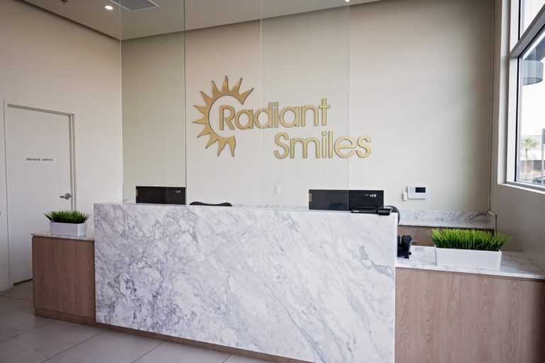

Chew evenly again.
With the gap filled, you are not steering every meal to one side of your mouth out of habit.
A fixed bridge replaces one or more missing teeth by anchoring to the healthy teeth on either side of the gap.

A gap changes how you eat before you notice it.
You start chewing on the other side without ever deciding to.
The habit sets in, and one side of the mouth does the work.

The teeth around the gap move as well.
The ones either side lean towards it, and the tooth opposite drifts into the space. Your bite is not what it was.
That drift is why a gap gets harder to close the longer it sits.
The teeth that would anchor a bridge are the same teeth that are quietly moving.
The published coverage numbers belong here, stated plainly.
The ADA Health Policy Institute reports that 55% of adults aged 65 and older have no dental benefits, fetched 30 July 2026.
Dental visits track coverage directly in that same source.
In 2023, 53% of privately insured adults had a visit, against 16% of those with no dental insurance.

With the gap filled, you are not steering every meal to one side of your mouth out of habit.
A bridge fills the space those teeth have been leaning into, so the bite has something to close against.
A fixed bridge is cemented onto the anchor teeth. It is not taken out at night the way a partial denture is.

A bridge is carried by the teeth either side of the gap, so those teeth have to be sound. Digital X-rays may reveal bone loss and poor tooth and root positions.
Each anchor tooth is shaped so a crown can seat over it. Local anaesthetic is used where it is needed, and you are told before it is given.
You leave with the prepared teeth covered. The temporary holds the space while the bridge is made.
The bridge is seated and adjusted until it closes evenly. You bite down and tell us how it feels.
You receive them at the end of the procedure. Brushing, flossing and regular dental visits aid in the life of the bridge.

Our Lake Mead office holds 4.5 stars from 506 patient reviews on Birdeye, fetched 30 July 2026.
Those reviews describe that office, and the scope stays attached.

A bridge is planned, prepared and fitted by the same practice.
We are one dental group running seven offices across Las Vegas, North Las Vegas and Henderson. We are not a franchise and not a referral network.
That matters because a bridge is a multi-visit piece of work. Where offices are separately owned, a consistent standard between them cannot be promised.
Here, one clinical roster covers all seven offices, and every clinician who does this work is named on this site.



Also:
new patient offerWe quote after an examination, because the answer depends on the span and on the anchor teeth. We do not publish treatment prices on this site.
Coverage depends on your plan. Delta Dental, Cigna, MetLife and the Culinary Health Fund are among the 41 carriers listed on our insurance and financing page. Network status varies by office and by plan. Contact the office you want with your plan details before you book.
The anchor teeth are prepared under local anaesthetic. They can feel tender afterwards, and we tell you what to expect before you leave the chair.
New patients can start with the $45 exam and X-ray, or $29 if you are a senior.
Both prices are published on our own site and were current on 30 July 2026.
Payment plans are available through Care Credit, Cherry, Sunbit and Lending Club. Terms are set by the lender and are subject to credit approval. They are not terms offered by this practice.